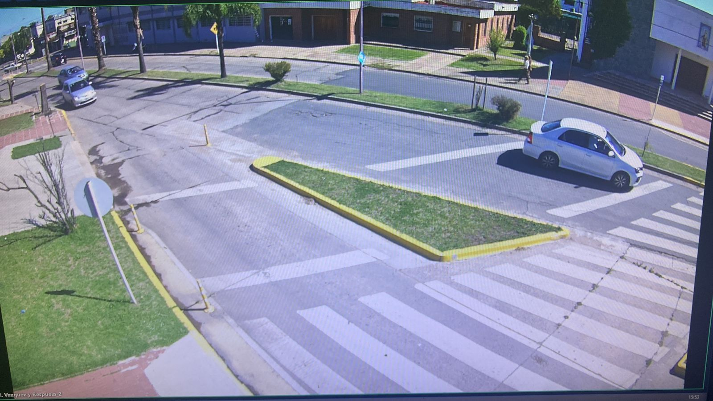
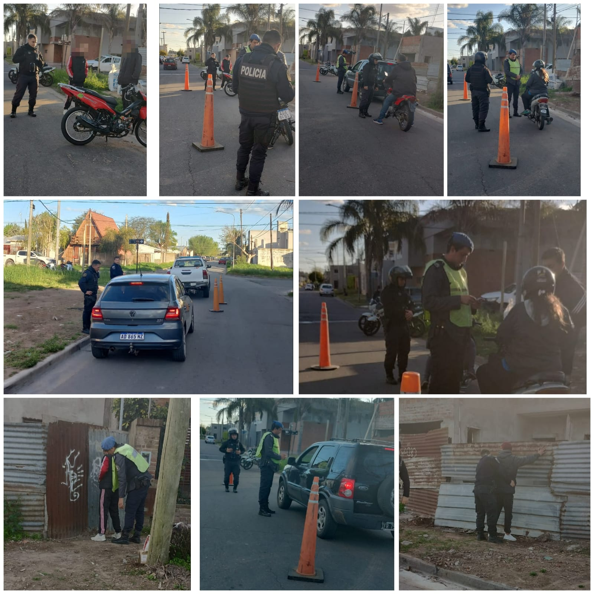

S.F.G.G
nashe
En cuanto al tema seguridad, "Nuestro sector sufre más inseguridad en verano porque hay muchos boliches en Avenida de Circunvalación y en Benito de Miguel. La idea es seguir sumando cámaras (de videovigilancia) adentro del barrio", afirmó Alejandra Lopez.
"Se sumaron dos cámaras de seguridad en el barrio gracias a los pedidos de la Sociedad de Fomento." (nov 2023)
El barrio cuenta con tres cámaras de seguridad en Comandante Acha y Avellaneda, Mariano Moreno y Castalli, y Villegas y Sampayo. También hay cámaras funcionando en Benito de Miguel y Padre Respuela, Respuela y Circunvalación, Ruta 7 y Circunvalación y Benito de Miguel y Ruta 7.
 Efectivos de UPPL continuando desplegando operativos de seguridad en los distintos barrios de la ciudad, en la oportunidad se realizó uno en el barrio denominado GREGORIO GONZALEZ. Todo surge de las reuniones de planificación que se realizan semanalmente entre la Policía de Seguridad y la Secretaria de la misma aérea del Gobierno local, tendiente a prevenir delitos y faltas en general como así también dar con personas con pedidos de capturas y vehículos con pedido de secuestro. Los mismos se llevan a cabo en horarios y lugares planificados oportunamente. (oct 2023).